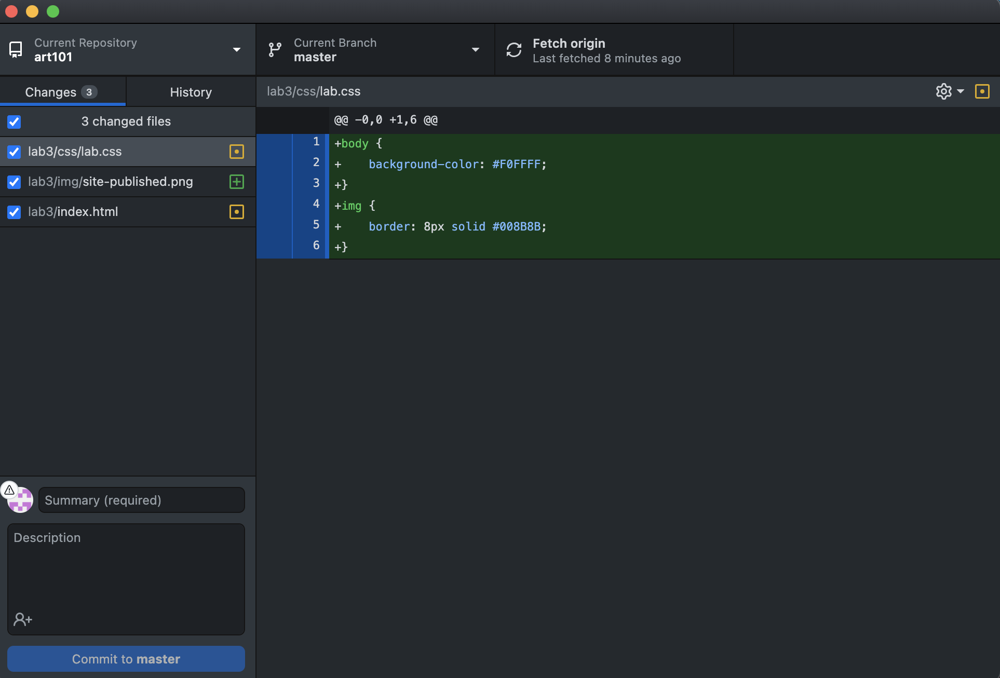

The goal of this lab was to organize file structures on my system and add index.html files to each lab.
I encoutered a lot of challenges during this assignment. Firstly I accidentaly deleted my art101 file attempting to rename it I then ran into issues getting my selfie to appear which turned out to be a misspelling of the file name. Overall I overcame these issues but still find it challenging to keep my files organized and easily locate and move images.
Here is the file structure:
...and the HTML for this very page:
This is what the site looks like published using Github!
...and now how the files look in Github:
Lastly the HTML and CSS data for Lab 3